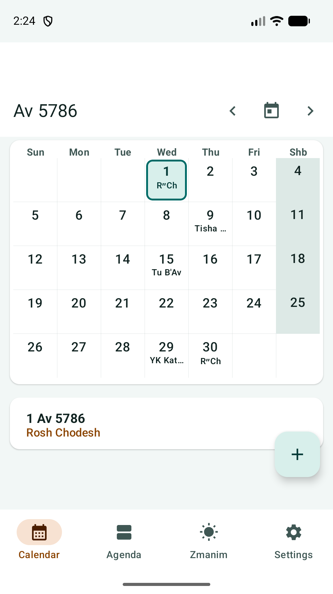
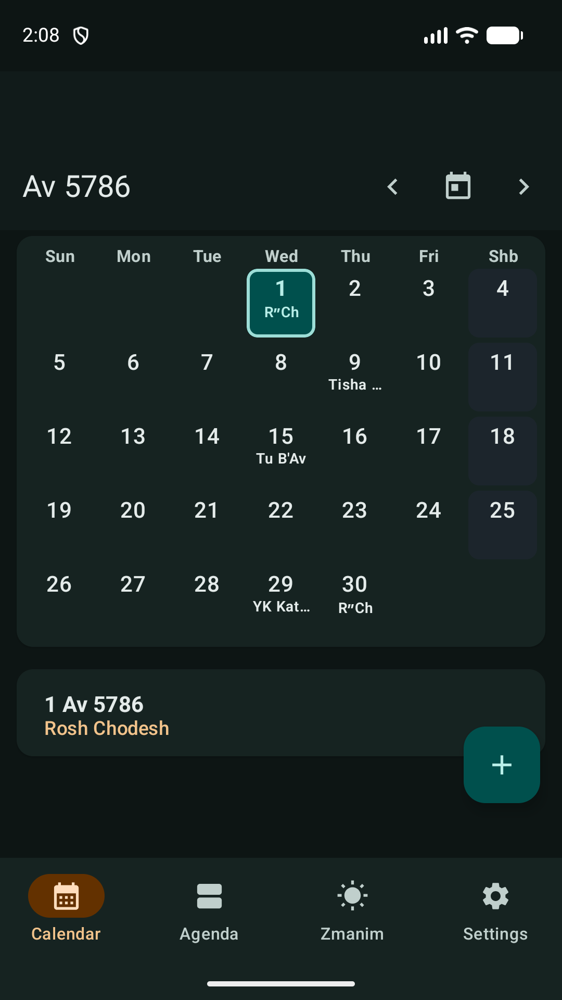
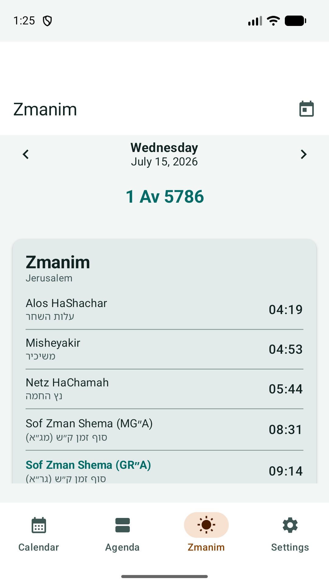
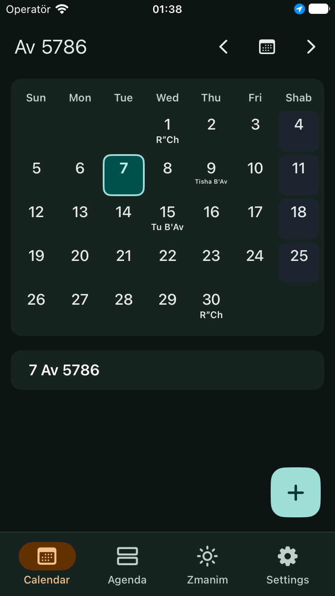
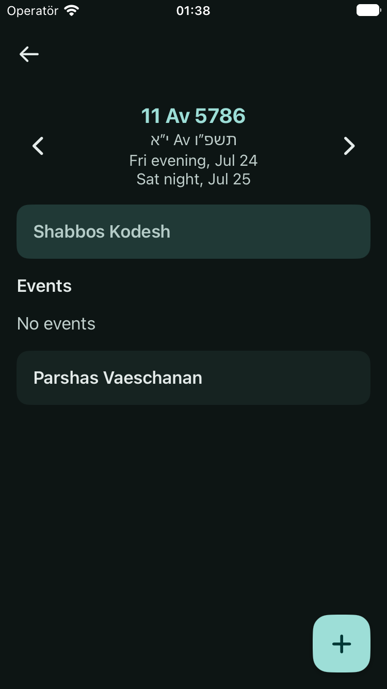
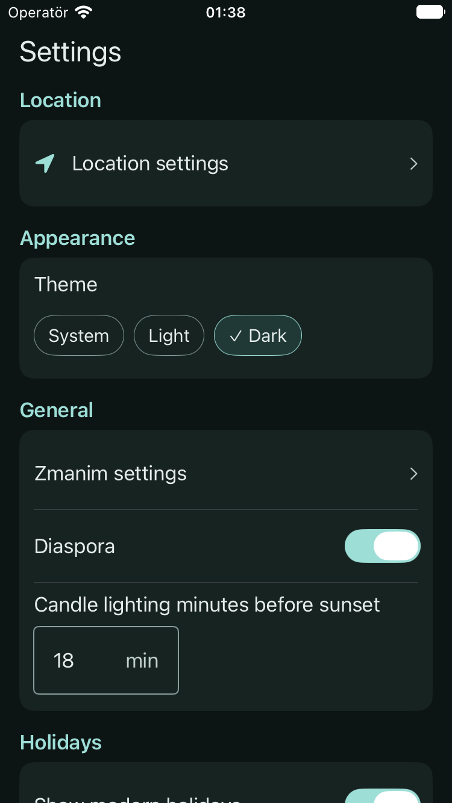

Hebrew calendar
Month, day, and agenda views with holidays, parsha, fasts, and personal events.
Jewish time, clearly
JewCal brings Hebrew dates, daily zmanim, holidays, reminders, and personal events together in one private app for iPhone and Android.

Built around the Jewish day
JewCal presents the Hebrew calendar and its evening-to-evening context while keeping the interface fast, readable, and useful every day.
Month, day, and agenda views with holidays, parsha, fasts, and personal events.
Clear, chronological zmanim with offline city search and configurable calculations.
Flexible notifications with built-in protection for Shabbos Kodesh and Yom Tov.
Hebrew dates show their evening-to-evening civil span, with configurable tzeis calculations.
Create separate calendars, share a file once, or add a calendar from a website so it stays updated. Read the guides.
Native iPhone and Android apps with light and dark themes and Hebrew and English. Everyday features work without internet, and calendars update automatically when you are connected.
A focused daily view
Native interfaces for both platforms, built around the same Hebrew calendar, zmanim, reminders, import and export, and local backup experience.





No accounts, ads, analytics, crash reporting, or billing. Personal calendars, settings, and saved location stay on your device. JewCal checks for Supporter updates only while that calendar is turned on, and also checks online calendars you add.